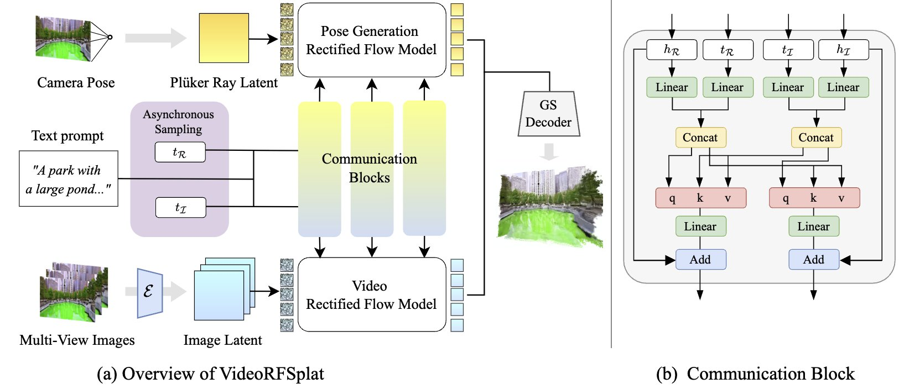
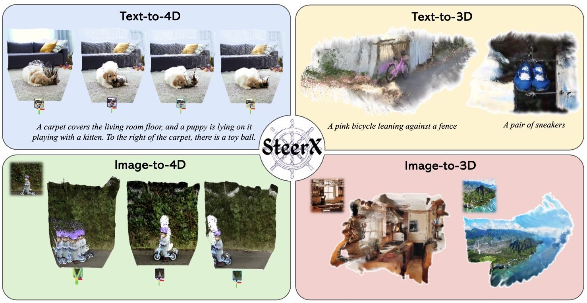

|
Hyelin Nam I'm a 1st year PhD Student at Umich CSE, advised by Prof. JJ Park. Before that, I completed my master's at KAIST, where I was advised by Prof. Jong Chul Ye. Recently, I have worked on diffusion models, leveraging their adaptability to enhance the quality of generated outputs. My goal is to advance generative models to accurately capture real-world dynamics, ultimately enabling them to function as reliable real-world priors. |

|
Research |
|

|
[C6]
VideoRFSplat: Direct Scene-Level Text-to-3D Gaussian Splatting Generation with Flexible Pose and Multi-View Joint Modeling
Hyojun Go*, Byeongjun Park*, Hyelin Nam, Byung-Hoon Kim, Hyungjin Chung, Changick Kim ICCV, 2025 project page / arXiv / code A text-to-3D method using a video generation model to jointly generate diverse camera poses and realistic 3DGS for unbounded scenes. |
|

|
[C5]
SteerX: Creating Any Camera-Free 3D and 4D Scenes with Geometric Steering
Byeongjun Park*, Hyojun Go*, Hyelin Nam, Byung-Hoon Kim, Hyungjin Chung, Changick Kim ICCV, 2025 CVPR 2025 Workshop on WorldModelBench project page / arXiv / code A zero-shot inference-time steering method that enhances geometric alignment in 3D/4D scene generation by integrating scene reconstruction using pose-free geometric reward functions. |

|
[C4]
Optical-Flow Guided Prompt Optimization for Coherent Video Generation
Hyelin Nam*, Jaemin Kim*, Dohun Lee, Jong Chul Ye CVPR, 2025 project page / arXiv / code Prompt optimization driven by an optical flow discriminator to enhance temporal consistency and natural motion dynamics in video diffusion models. |

|
[C3]
CFG++: Manifold-constrained Classifier Free Guidance For Diffusion Models
Hyungjin Chung*, Jeongsol Kim*, Geon Yeong Park*, Hyelin Nam*, Jong Chul Ye ICLR, 2025 Silver prize, 31st Samsung Humantech Paper Award project page / arXiv / code A simple fix to CFG that enables lower guidance scales, improves sample quality and invertibility. |

|
[C2]
Contrastive Denoising Score for Text-guided Latent Diffusion Image Editing
Hyelin Nam, Gihyun Kwon, Geon Yeong Park, Jong Chul Ye CVPR, 2024 project page / arXiv / code Ensure structural correspondence by leveraging diffusion features during the score distillation process. |

|
[C1]
HairFIT: Pose-invariant Hairstyle Transfer via Flow-based Hair Alignment and Semantic-region-aware Inpainting
Chaeyeon Chung*, Taewoo Kim*, Hyelin Nam*, Seunghwan Choi, Gyojung Gu, Sunghyun Park, Jaegul Choo BMVC, Oral Presentation, 2022 Best Paper Award, Korean Artificial Intelligence Association, 2021 arXiv |